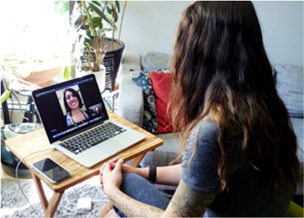
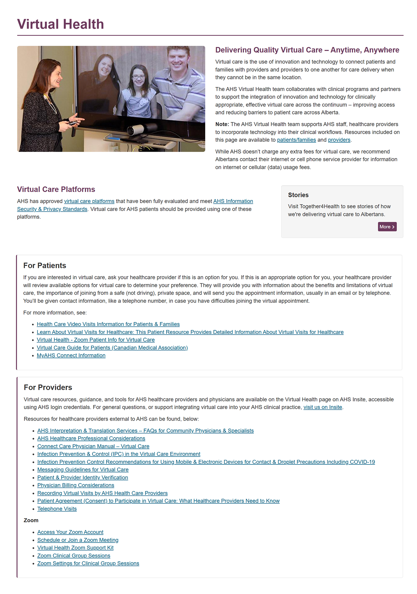
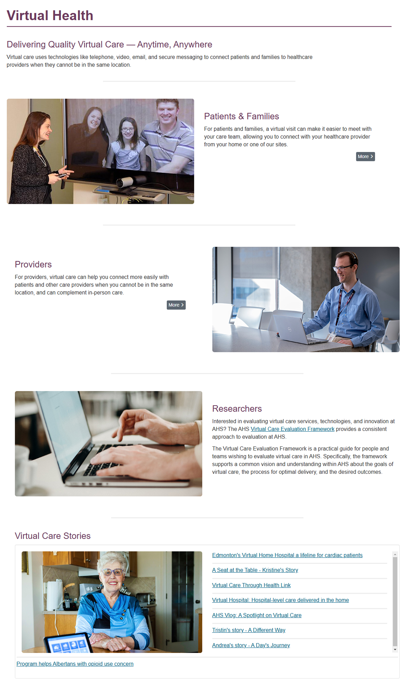

Virtual Health
Usability evaluation
Summary
I was responsible for moderating 11 participants, including patients, external healthcare providers, and healthcare staff, in remote usability test sessions of our external and internal virtual health pages and assisting in making improvements.

Background
My role
Moderate remote usability sessions for participants undergoing tasks and answering questions about virtual health web pages
Target users
- Patients and families (external)
- Healthcare providers (external)
- Healthcare staff (internal)
Goal
Make improvements to our external and intranet virtual health web pages by:
- Assessing what is and isn't working
- Collecting first impression observations to help assess headings, scannability, and the use of visuals
- Validating assumptions and identifying usability concerns, content gaps, and areas for improvement
Findings
External page
- Finding the page was challenging
- Most users felt the page was overwhelming
- Internal links on the external page were confusing and frustrating
- Users were able to locate specific information, but there was room for improvement
- Segmenting the content by audience was helpful, but there was room for improvement
Internal page
- Although users were successful in finding information, the resources table was overwhelming
- Some felt the categories were too vague to be useful
Recommendations
Usability studies revealed several areas for improvement related to findability and design:
Findability
- Increase findability through awareness campaigns for both external and internal pages
- Improve contact information for urgent technical help
Design
- Increase whitespace to ensure the page feels more breathable
- Break up the text with more subheadings
- Evaluate the information hierarchy and how content sections appear
- Revise link labels to be clearer
- Ensure images provide value
- Conduct a plain language review of the external content
Screenshots
Before
After
Results and outcomes
Learnings
- I learned that pages can become overwhelming quickly as content is added over time.
- Showing too much information can make it difficult to find things.
- Breaking up content with more headings and whitespace can greatly benefit pages.